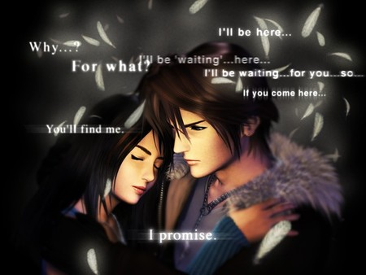

Forums galactiques > Assemblée Galactique : diplomatie officielle > Sa fin!
Pages : 1
| sloopy Respect diplomatique : 171  02/09 ETU 15:32 | Score : 13 Détails La tension était là! Le peuple avait peur et il avait raison. Dans le systéme 967 d'habitude l'un des plus calme de la galaxie, aujourd'hui la mort arrivé.
Les débrits des milliards de vaisseaux du marchand Sloopy tombaient par dizaines de milliers sur les planétes de son natal! Le ciel était en feu et il ne pouvait rien faire! Le vieux Roots avait pris le contrôle. Il bombardait inlassablement tout ce qu'il trouvait sur son passage. Toutes ces flottes, toutes ces vies partaient fumées. Au bout de plusieurs heures les tirs céssérent. L'atmosphére redevient respirable et les survivants sortent de leurs cachettes. Les villes n'étaient plus que ruines et cadavres seul quelques bâtiment avait tenu face aux chûtes de ses énormes débrits. Les surivants ne prirent pas le temps de pleurer les premiers morts. Attendant la suite en regardant ce ciel rouge sang. Le sang des morts et disparus dans le ciel. Enfin Sloopy sorti de son bunkeur accompagné de quelques gens qu'il avait caché avec lui. Il avait appris par radio que son co-natif Merkur avait aussi perdu énormément d'hommes dans cette attaque et espérait qu'au moins lui s'en sortirait. Soudain un bourdonnement sourd commença à faire trembler le sol. C'était eux! Ketze venait d'arriver dans le systéme et il n'était pas venu seul. Les kamikazes arrivaient pour détruire les derniers points névralgiques encore debout. Il ne servait plus à rien de se cacher. Les planétes allez être prisent par la force et personne ni survivrait. Sloopy redescendit calme dans son bunkeur pour écouter les derniéres nouvelles qu'il pourait encore reçevoir avant la destruction de sa cachette. - BzzzNatazzzzZZZzzzerkurZZzzpriszzzzzzzzzzzz La radio venait de rendre l'âme. Juste aprés la confirmation de la prise du natal de son collégue marchand Merkur. Sloopy espérait que celui-ci soit parti en voyage d'affaire pendant l'attaque. Enfin l'heure fatidique arriva. Sloopy plutôt que ce faire tuer par ses assaillants, décida de raser le quartier en déclenchant l'autodestruction de son bunkeur. -"10" -"9" -"8" -"7" -J'espére que Jay est en sécurité sur la planète "Institut de beauté". -"6" -"5" -"4" -"3" -"2" -"1" Une énorme explosion se produisit réduisant en poussiére tout sur son passage. Sloopy venait de partir retrouvé ses amis partis dans les cieux. Enfin pour lui la paix éternel arrivait. HRP//Cette salle est pour l'instant réservé seulement au personne étant invité à réagir. Elle sera ouverte au public par la suite//HRP | ||
| Merkur Respect diplomatique : 97  03/09 ETU 09:06  | Score : 9 Détails Ambiance musicale conseillée : http://www.radioblogclub.fr/open/14164/dark_shines/Dark%20shines
Une sonnerie retentit au loin, elle semble pourtant si proche et si violente, non elle est bien plus qu'une sonnerie... Il s'agit d'une sirène d'alarme, Espèr, la capitale de l'empire Neo-Krinien... est en danger. Les services de renseignement avaient vu ces commandants arriver, mais pourquoi aurait-il décidé de faire tirer les canons ? Jamais Merkur ne se souvenait leur avoir déclaré la guerre, ou même intenté une quelconque attaque. La grande majorité de la population avait été conduite dans les abris souterrains, cependant il était impossible de tous les réfugier... pas en un aussi court laps de temps. Cette volonté de neutralité... Elle fût l'erreur de sa vie, quoi de mieux que cette expression ? "L'erreur d'une vie", lui qui l'avait auparavant utilisée quelquefois, jamais il n'aurait crû aussi bien dire. Après avoir reçu confirmation de la nature belliqueuse des assaillants, les croiseurs ioniques tirèrent leurs lentes mais ô combien destructrices munitions... Il était trop tard, 2 planètes de son co-natif sloopy avaient eu le temps de tomber. ... ... Trop tard... Trop... Des sirènes sortaient du silence des derniers jours de la capitale. Commandeur Memphis !! Des vaisseaux ont été identifiés, en approche rapide ! Ils ne sont pas armés mais la spectrographie indique quelque chose d'inquiètant ! Des kamikazes... Activez les défenses !! Détournez toute l'énergie pour optimiser au maximum leurs alimentations !! bien ! Commandeur ! Allez vous réfugier s'il vous plaît ! Non... Si espèr se doit de tomber... je tomberai avec... Commandeur... Dépêchez-vous !! Notre lenteur à été la cause de cet événement !! Après un salut, l'officier regagnait ses troupes. Merkur activa l'écran de contrôle holographique de son bureau afin d'évaluer le nombre de ses assaillants, les vidéos satellites arrivaient, Merkur esquissait un petit sourire avant de projeter à terre le récepteur holographique. Il se dirigea vers la grande baie vitrée de son bureau, observant ce ciel si bleu qu'il aimait tant regarder. Les premiers tirs défensifs se firent entendre, bientôt suivis par de nombreux autres. Très vite, ce ciel si bleu qu'il chérissait tant s'était recouvert d'un rouge mortuaire, telle une bulle enflammée recouvrant une planète innocente... Les défenses tenaient bon, l'avant garde de l'attaque avait été stoppée. Il savait... Il savait qu'il suffisait d'un vaisseau kamikaze de trop pour que la fin arrive... Au loin, un point rouge sombre descendait vers le sol, une explosion s'ensuivit,le vaisseau de trop était arrivé... Un point important de la défense planétaire venait de tomber. De plus en plus de vaisseaux s'écrasaient, les yeux de Merkur se crispaient, il leva un bras vers le ciel rouge vif, tel un dieu de la mort l'appelant, un point noir perça le nuage de feu enveloppant la planète et se dirigea vers le quartier général où Merkur se tenait. sloopy, nous nous observions mutuellement sans jamais avoir de réélles tensions, ainsi je t'en remercie, c'est pour toi qu'ils viennent, je t'en prie, essaye de survivre... Vous tous que j'ai envoyé dans les territoires frontaliers : Kashim Karirin, Kotar Enn, Lunar Esper et enfin toi, Sarah Yoinn toi qui porte mon enf... Le quartier général explosa, touché par un vaisseau ne laissant qu'un amas de flammes. Merkur Memphis... est mort. Et oui merkur est mort, mais il restera un Memphis en vie, on se reverra surement à la gamma, ce fût amusant avec vous tous ! | ||
| Ashkar Respect diplomatique : 154  03/09 ETU 09:40 | Score : 6 Détails La nouvelle ne tarda pas à arriver sur le vaisseau mère du commandant Ashkar. L'officier de liaison fut le premiers à lire l’information et eu du mal à cacher son étonnement. Il ne savait pas vraiment comment l’annoncer à son chef, pourtant il devait le faire.
Commandant, nous avons reçu une transmission d'un des généraux du commandant Sloopy. Il semblerait que le commandant Sloopy soit mort. Son natal a été attaqué par le commandant Roots boy et le commandant Ketze, et pour éviter sa capture, il a préféré mettre fin à ses jours. Je ne suis pas arrivé à temps... Soldat, retournez à votre poste. A vos ordres, commandant ! Ashkar se retourna et chercha son second, le général Lenix. Général, réunissez l'état-major nous entrons en guerre contre le commandant Ketze et Roots boy. Faites moi parvenir toutes les données existantes sur ces deux commandants. Je veux être au courant de leurs moindre faits et gestes. Ce sera fait, commandant. Lenix s'exécuta immédiatement. Ashkar regardait par le hublot le vide intersidéral, il était pensif. Aujourd’hui était un jour sombre pour lui, il venait de perdre son meilleur ami, sans même avoir eu le temps de l’aider. Il se remémora tous les bons moments passés en sa compagnie. Tout ce qui avait fait qu'ils étaient devenue des meilleurs amis... Il finit par revenir à la réalité.Il le vengerait. | ||
| sloopy Respect diplomatique : 171 03/09 ETU 23:40 | Score : 8 Détails L'enterrement de Sloopy eu lieu dans le système 911 sur une planète voisine d'un certain institut. C'était l'une des choses qu'il aurait voulu. Jay en était sûr. Ainsi que le souhait d'inviter ami comme ennemi à venir à son enterrement.
Sloopy avait laissé de nombreuses questions à certains personnages de la galaxie. Et il avait caché et gardé de nombreux secrets avec lui qui étaitpour certains dans son testament. Tout le monde ou presque était arrivé. Métamorphosis avait eu un peu de retard car elle avait coincé sa robe dans la portiére de sa navette qui s'en allait au garage. Et enfin Yoh était en retard comme à son habitude Hellfirienne. La cérémonie commença puis s'en suivit l'ouverture du fameux coffre contenant le testament de ce cher marchand. Jay ouvrit le coffret en métal pour d'abord en sortir à son grand étonement un vieu CD relique des temps ancien avec un petit mot laissé dessu : - "SURPRISE" pour écouter ce CD : http://www.radioblogclub.fr/open/140080/boire/Licence%20IV%20-%20Viens%20boire%20un%20p'tit%20coup%20%3Fa%20maison%20(1986) La lecture commença sur fond de musique... insitant à la boisson?^^ "Chalut! Chalut! Apparement je dois être mort à l'heure qu'il est alors je remercis tout ceux qui m'ont supporté et qui sont venus! Certains ici ne sont là que par intérêt pour voir s'ils sont sur le testament. - Mais oui polonga et darling3 vous aurez une ou deux planétes! D'autres justes par amitié : Ashkar, Aokiji, Méta, Recuicui, et j'en passe... Enfin ceux qui ont dû participés à mon décé et dont je ne connais pas encore les noms au jour où j'écris ce message bien-sûr^^. Alors passons au testament : - Je légues ma fortune à... PERSONNE! Je vous laisse trouver mon coffre qui ce trouve sur une des 5 planètes les plus défendus que je possédes. Un petit indice le systéme dans laquelle ce trouve cette planète posséde un "9" dans ces coordonnées. Celà vous faits en tout 6 systémes potentiels! Le premier qui la trouve et posséde la bonne planète gagne le pactole. - Je souhaite que mon institut de beauté soit vendu aux enchères. - Je lègues quelques planètes à darling3 et polonga pour l'aide qu'ils m'ont fourni dans certaines de mes tâches quotidiennes. - Je lègues ma collection de Bd à... Soda! - Mon jeu de batailles spatiales à Ashkar! - Mon professeur de sophismes juridiques à Connor! Il en a certainement plus besoin que moi!^^ - Un kit de maquillage spéciale orgie à Lizaka! - Mon herbe à chat à ce vieux Roots pour compléter sa collection! Maintenant les remerciement au commandant qui m'ont aidé à avancé dans ce monde et m'ont ouvert les yeux dans certains moments difficiles : - Merci Ashkar d'avoir toujours était avec moi on fidéle ami. - Merci à la fratrie Rokha de m'avoir ouvert les yeux sur le vrai but d'une de mes anciennes batailles. - A Pelaeon arf je l'ai dit! d'avoir été mon concurent le plus sérieux au marché. - Aux Insurgés et Hellfirien, ainsi qu'à Soda et ce feu Sandor de m'avoir inspiré dans mes convictions. Maintenant une des questions que tout le monde c'est déjà posé : "Mais qui étaient les mistérieux fournisseurs des attentats qui vont de l'affaire leraxx jusqu'à aujourd'hui?" Et bien je pourrais dire qu'il ne restait que moi de vivant jusqu'à il y a peu. Parmis les 2 fournisseurs qui y ont le plus oeuvré . Même si lors des attaques qui vont de leraxx à Dr No je me suis battu pour des raisons qui ne me concernées pas je n'ais appris ces vrais raisons que bien tard. Merci aux frères Rohka je ne regrettes en rien ce que j'ai fais. Car faire vivre et bouger la galaxie était mon ultim but! Un chat qui vous veut du bien, Sloopy," Sur la stelle que l'on venait de déposé pour son honneur on pouvait voir : Commandant Sloopy Aurait préféré être mort en s'étouffant avec une chips Membre de la lutte anti-Insurgés Membre des défenseurs des techniques interdites Marchand Arnaqueur Terroriste à ces heures HRP//Le sujet et maintenant libre au publique et à tout commentaires//HRP HRP//Merci à tout les joueurs pour ces bon moment passé avec vous! Et nous nous retrouverons peut-être voir surement pour la Gamma qui sais?^^//HRP | ||
| Bakuryu Respect diplomatique : 17  04/09 ETU 12:06 | Score : 3 Détails *Un homme en noir, assied en tailleur dans un coin à l'ombre se releva, et prononça ces quelques mots*
J'espère que vous reposerez en paix dans un monde remplie d'herbe à chat et de souries. *Bakuryu sort de sa poche gauche une poignée d'herbe à chat et la répend avec parcimonie sur la stèle, puis s'incline et s'en va. | ||
| Polonga Respect diplomatique : 17  04/09 ETU 14:26 | Score : 9 Détails Polonga, appris la triste nouvelle que le commandant sloopy étais mort il se précipita pour aller voir sloopy il arriva devant sa stèle où il avait inscrit
Commandant Sloopy Aurait préféré être mort en s'étouffant avec une chips Membre de la lutte anti-Insurgés Membre des défenseurs des techniques interdites Marchand Arnaqueur Terroriste à ces heures un petit sourire se fit sur son visage même mort tu reste un grand marchant et ton humour t'aura accompagné jusqu'à la fin je te remercie de me laisser ces 2 planètes en héritage mais... Polonga alla vers le testament prenna son stylo et barra polonga je ne veux pas tes planètes. sur se je te laisse il posa un pacquer de chips sur sa tombe est partie |
Pages : 1
Forums galactiques > Assemblée Galactique : diplomatie officielle > Sa fin!